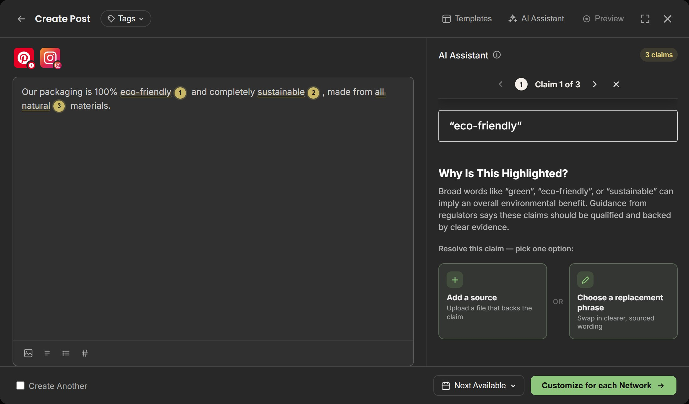
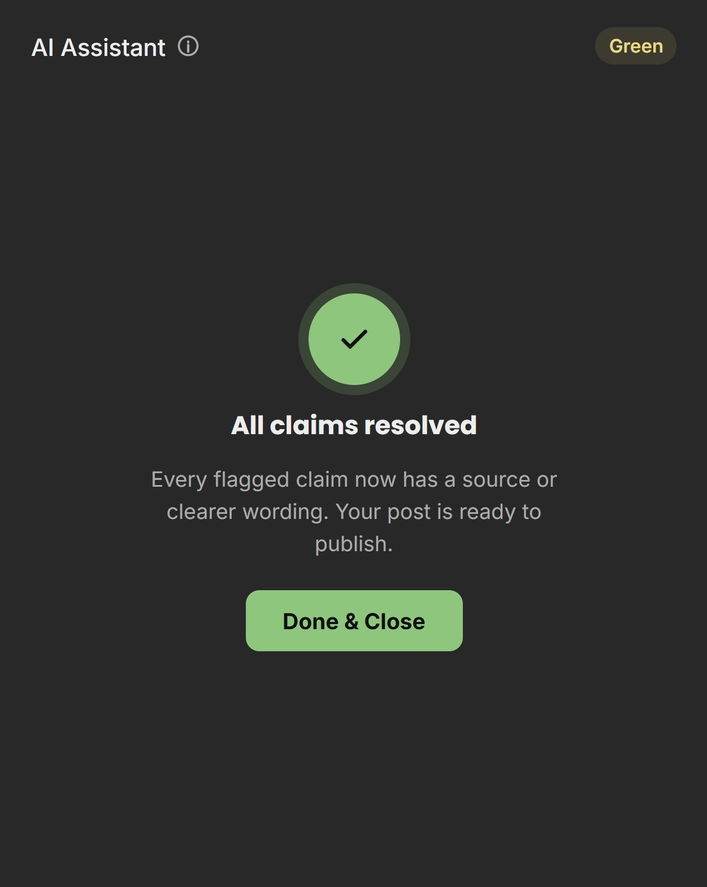
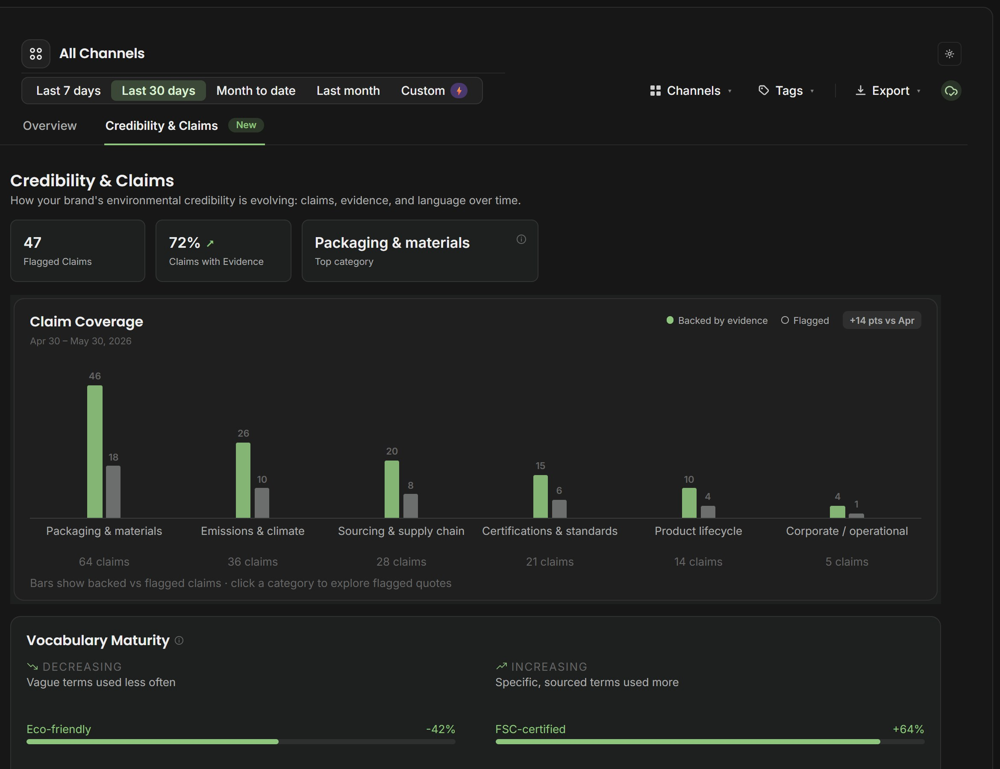
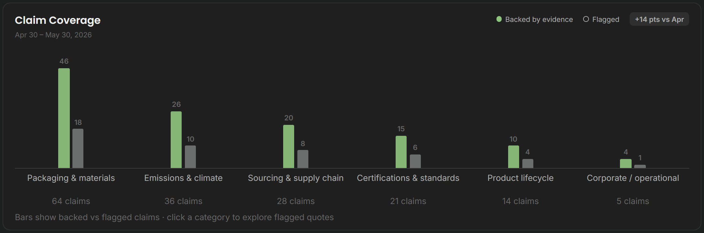
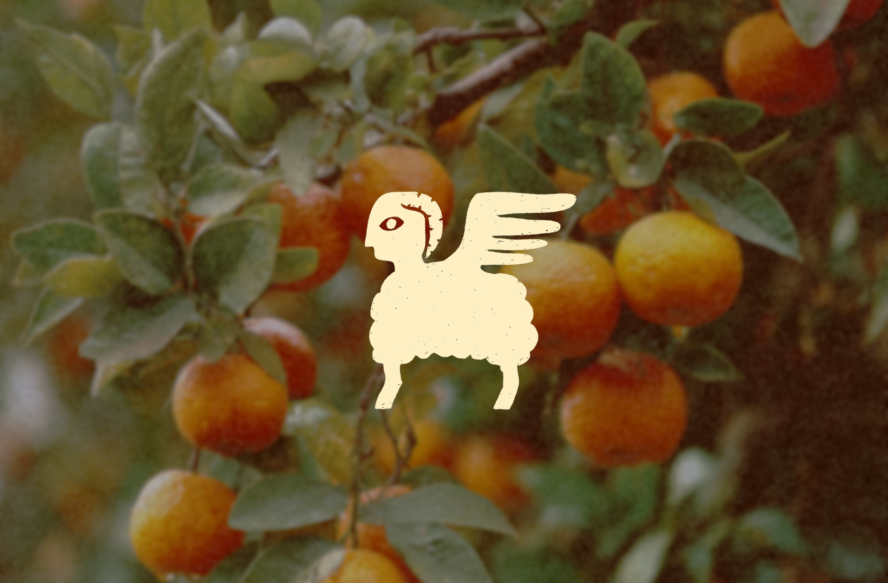
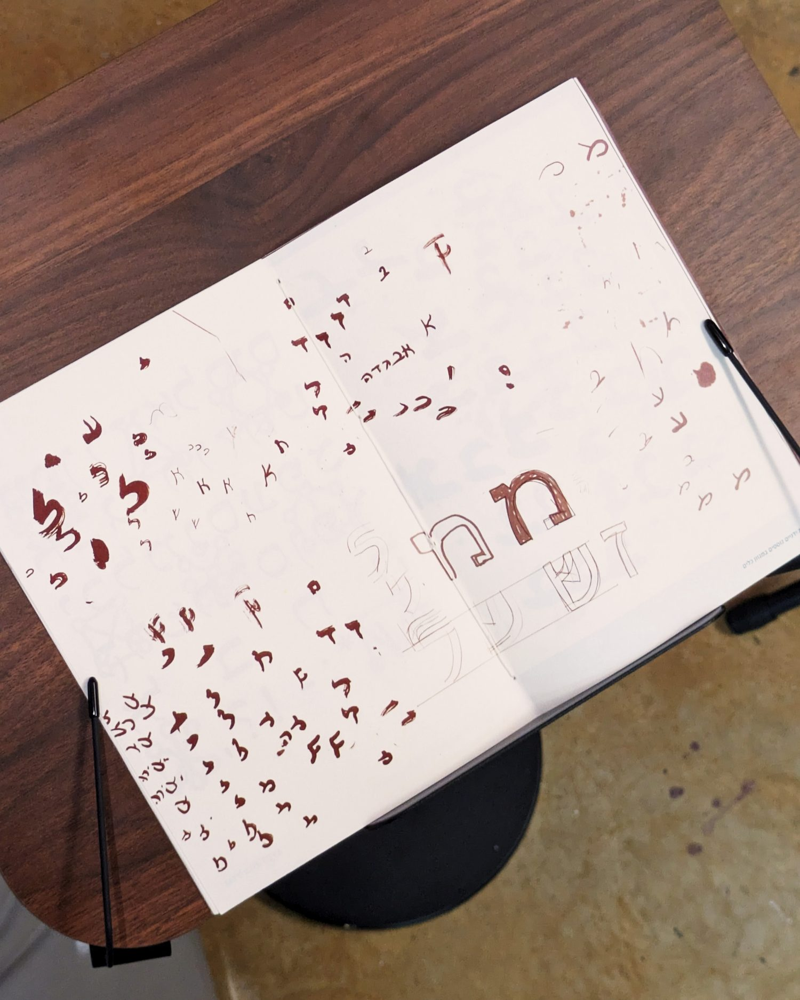
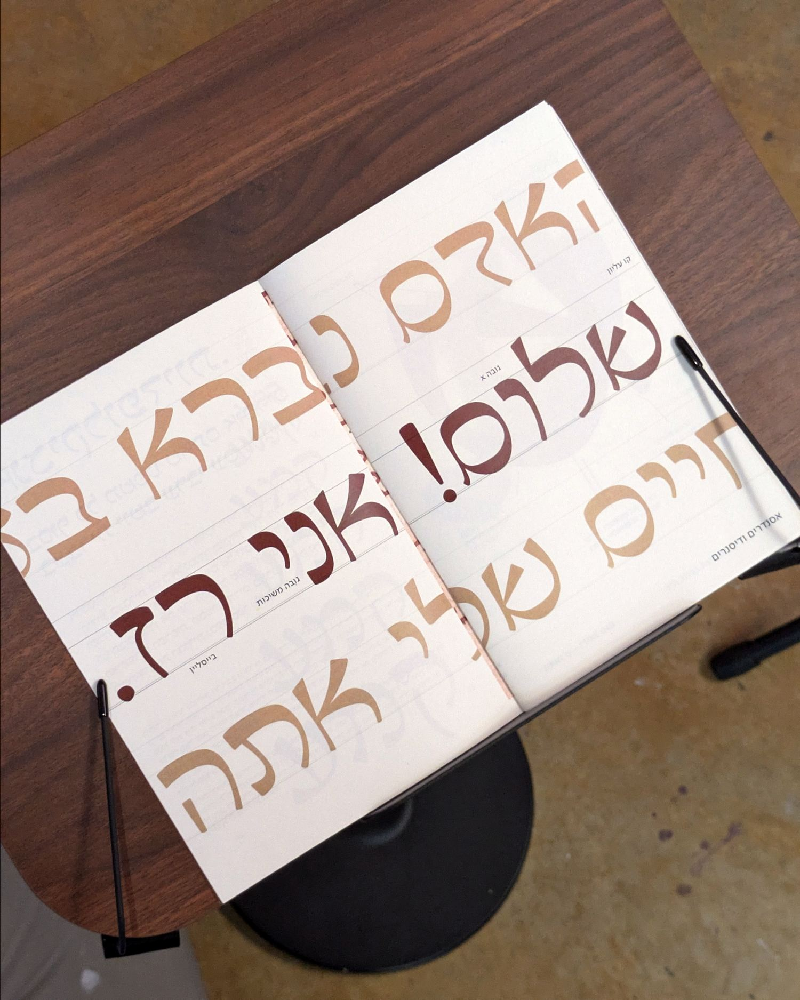
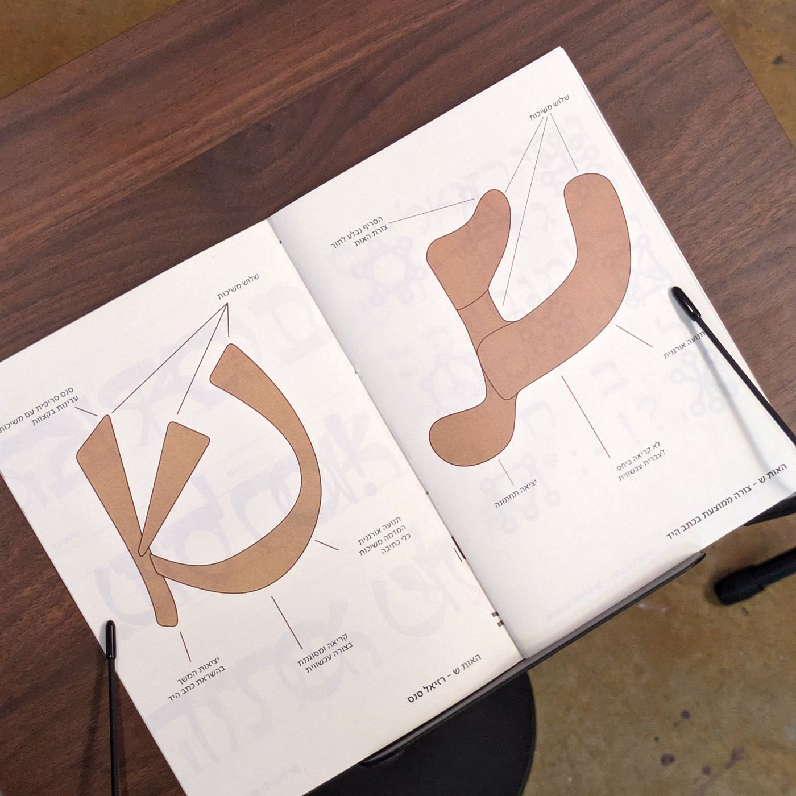
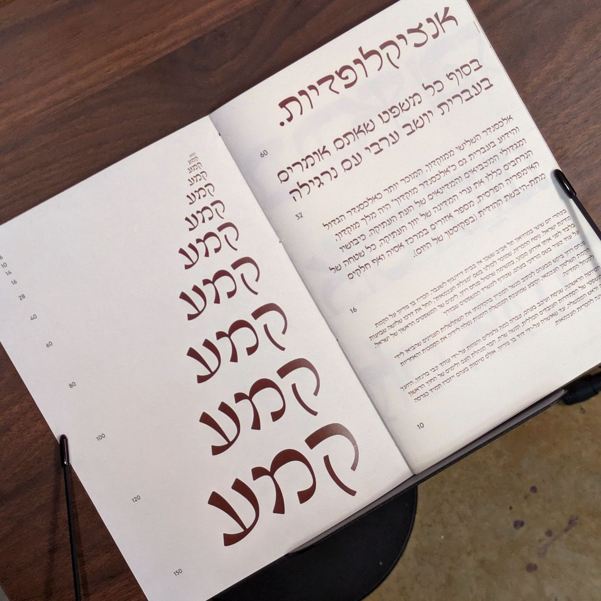

עוד רגע ומתחילים
עוד רגע ומתחילים
01 / 05
ספר זה הוא מקדש לתרבות המימז הישראלית. בספר נחקור את מקורות המימז, נגדיר מה הוא מים ומה הוא מים ישראלי, איך הם משפיעים על חיי היום יום שלנו - ממקפיינים פרסומיים של משרדי ממשלה ועד עמודי מימז איזוטריים.
בנוסף, הספר מכיל ארכיב של מימז ישראליים ומגוירים - שמטרתו להראות לקורא את העושר התרבותי שנמצא במקומות חבויים מהעין הציבורית. מטרת הספר היא לפתוח צוהר לתרבות אינטרנט נישתית שלאט לאט הופכת לקונצנזוס ציבורי.


02 / 05
Buffer היא פלטפורמה לניהול נוכחות ברשתות חברתיות. מנהלי תוכן כותבים בה פוסטים, מתזמנים אותם לכל הערוצים ועוקבים אחרי הביצועים. המשימה בקורס הייתה לקחת מוצר דיגיטלי קיים ולהוסיף לו פיצ'ר שמשרת מטרה סביבתית, בלי לשבור את מה שכבר עובד בו.
מנהלי סושיאל מפרסמים טענות סביבתיות שאין להן כיסוי, לא מתוך כוונה להטעות, אלא כי "ידידותי לסביבה" נשמע כמו שיווק ולא כמו הצהרה שצריך לעמוד מאחוריה. בינתיים הרגולציה מתהדקת: ה-EU Green Claims Directive וה-FTC Green Guides דורשים שטענה כזו תהיה מסויגת ומגובה בראיות.
ההחלטה המרכזית שלנו הייתה לא לבנות כלי חדש. ל-Buffer כבר יש AI Assistant שכותב ומשכתב פוסטים, והמשתמש כבר פונה אליו ברגע הנכון: בזמן הכתיבה, לפני הפרסום. במקום להוסיף עוד מסך שצריך לזכור להיכנס אליו, נכנסנו לתוך הכלי שכבר יושב בזרימת העבודה.
מעבר לזיהוי נוסף מאגר. כל טענה שסומנה, כל מקור שצורף וכל ניסוח חלופי שנבחר נאספים לאורך זמן. כך המערכת מפסיקה להיות בודק־איות ומתחילה להראות למותג איך השפה שלו משתנה.
כל טענה שסומנה מציעה שתי פעולות שסותרות זו את זו, לצרף מקור או להחליף ניסוח, מופרדות ב-or. הצ'קבוקס שהיה שם קודם וסטטוס אישור המקור ירדו. המשתמש בוחר נתיב אחד וזהו.

סיום הפלואו מציג מצב הצלחה סטטי ופעולה אחת שמחזירה לקומפוזר. בגרסאות קודמות עמד שם כפתור שהזמין להמשיך, ולא היה ברור אם נשארה עבודה.

נתוני הקליימים קיבלו טאב משלהם ולא נדחסו לתוך ה-Overview הקיים. שם ממשיכים למדוד engagement, וכאן נמדדת האמינות, כך ששתי השאלות לא מתחרות על אותו מסך. גרף "claims per month" הוסר כי הפסיק להיקרא בקנה מידה גדול.

רוב העבודה לא הייתה בהמצאה אלא ביישור. הפרוטוטייפ עבר שתים־עשרה גרסאות, ורובן הוקדשו להטמעת הפיצ'ר בתוך Buffer כך שייקרא כאילו היה שם מלכתחילה.
בגרסאות המוקדמות בנינו לרכיב תצוגת נתונים משלו: שדה נקודות שבו כל נקודה היא טענה אחת, טבעות זהובות לטענות שסומנו, וגרף חודשי בגווני זית. זה נראה טוב וזה עבד. מה שלא החזיק היו שתי הנחות שמתחתיו. הראשונה, שזו צורת תצוגה שמשתמש יודע לקרוא בלי ללמוד אותה; מנהל סושיאל לא פוגש שדה נקודות ביום־יום. השנייה, שהיא תחזיק בכל קנה מידה; אפשר לקרוא ארבעים נקודות, לא ארבעת אלפים, ומותג גדול מייצר טענות בקצב הזה.
לכן עברנו לתצוגה קלאסית: עמודות מקובצות בירוק ובאפור ניטרלי, בפלטה הרשמית של Buffer. ויתרנו על משהו שאהבנו לטובת משהו שכל משתמש כבר יודע לקרוא ושממשיך לעבוד גם בסדר גודל אחר. מה שהנחה אותנו לאורך כל הדרך היה פתרון מינימלי ויעיל, כזה שמשיג את המטרה בהתערבות הקטנה ביותר במערכת הקיימת. הרכיב יצא פחות ייחודי ויותר נכון.
גררו את הידית. אותו כרטיס, אותה כותרת ואותם נתונים בדיוק, כך שההבדל היחיד הוא צורת ההצגה.


03 / 05
השוקת היא יותר מסתם דליקטסן - היא חגיגה של מלאכת יד מקומית וסקרנות קולינרית. ממוקמת בפרדס חנה, מרכז אומנותי זה מחבר בין חובבי אוכל לתוצרת איכותית, farm-to-table, עטופה בזהות מותגית שמרגישה אותנטית כמו המרכיבים עצמם.
יצרנו שפה ויזואלית השורשת בגוונים אדמתיים ואיורים בסגנון חיתוך עץ, המשקפים את מורשת גידול הבקר של הבעלים ואת התשוקה לשקיפות. מתוויות הצנצנות ועד פוסטרי הסדנאות - כל אלמנט עיצובי מזמין את הלקוחות להאט, לטעום את ההבדל, ולגלות את הסיפור מאחורי האוכל שלהם.


04 / 05
נבו - גופן עברי חדש שנוצר בהשראת טיפוגרפיה ישראלית משנות ה-60 וה-70 של המאה ה-20.
הגופן שואב מהאסתטיקה הגרפית של אותה תקופה - תקופה שבה עיצוב ישראלי מצא את קולו הייחודי, בין מודרניזם אירופי לזהות מקומית מתגבשת.
(נסו בעצמכם)
.jpeg)

05 / 05
רזיאל הוא גופן עברי שנולד מכתב יד מהמאה ה-18 של ״ספר רזיאל המלאך״, שמצאתי בספרייה הלאומית. הוא נכתב בטיפוס אות שלא הכרתי, ומשהו בו תפס אותי.
הפרויקט מורכב משני חלקים: הגופן עצמו, ואתר חי שבו סוכן בשם רז מנהל שיחה קצרה עם המבקר ושוזר לו קמע אישי.
(נסו בעצמכם)
האות ש - משמאל הצורה הממוצעת בכתב היד, ומימין הפרשנות בגופן. שלוש המשיכות נשמרות, הסריף נבלע בתוך צורת האות, והתנועה האורגנית של כלי הכתיבה נשארת ביציאה בתחתית.
באתר מחכה רז. הוא שואל שלוש-ארבע שאלות, מקשיב, ושוזר קמע שמתגשם מול העיניים בסוף השיחה. אפשר לסרוק אותו לטלפון, להדפיס כגלויה או לשמור כווידאו.
ספר ספסימן שמלווה את הגופן - אנטומיה של האותיות, היררכיית גדלים וטקסט רץ.



